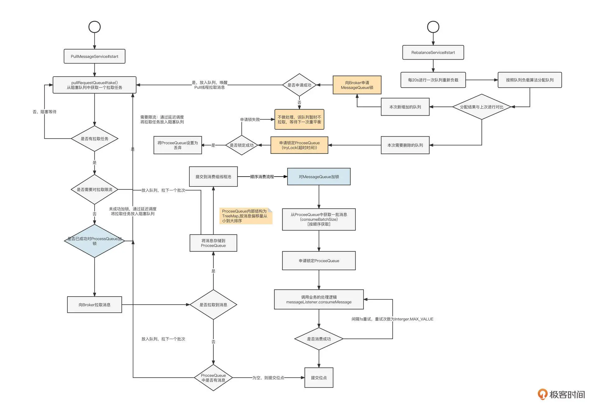
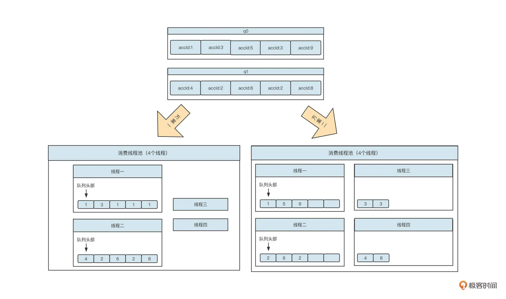
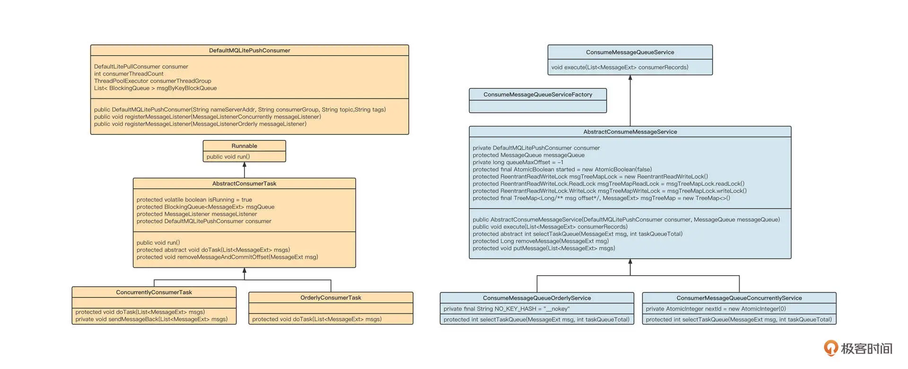
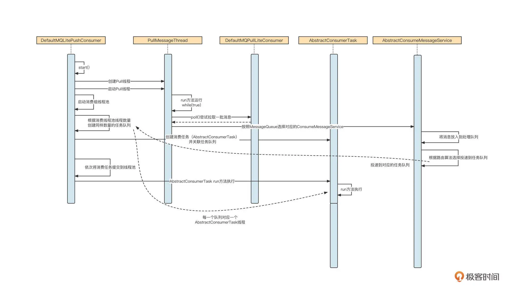

- 00 开篇词 为什么中间件对分布式架构体系来说这么重要？.md.html
- 01 中间件生态（上）：有哪些类型的中间件？.md.html
- 02 中间件生态（下）：同类型的中间件如何进行选型？.md.html
- 03 数组与链表：存储设计的基石有哪些？.md.html
- 04 红黑树：图解红黑树的构造过程与应用场景.md.html
- 05 多线程：多线程编程有哪些常见的设计模式？.md.html
- 06 锁：如何理解锁的同步阻塞队列与条件队列？.md.html
- 07 NIO：手撸一个简易的主从多Reactor线程模型.md.html
- 08 Netty：如何优雅地处理网络读写，制定网络通信协议？.md.html
- 08 加餐 中间件底层的通用设计理念.md.html
- 09 技术选型：如何选择微服务框架和注册中心？.md.html
- 10 设计原理：Dubbo核心设计原理剖析.md.html
- 11 案例：如何基于Dubbo进行网关设计？.md.html
- 12 案例：如何实现蓝绿发布？.md.html
- 13 技术选型：如何根据应用场景选择合适的消息中间件？.md.html
- 14 性能之道：RocketMQ与Kafka高性能设计对比.md.html
- 15 案例：消息中间件如何实现蓝绿？.md.html
- 16 案例：如何提升RocketMQ顺序消费性能？.md.html
- 17 运维：如何运维日均亿级的消息集群？.md.html
- 18 案例：如何排查RocketMQ消息发送超时故障？.md.html
- 19 案例：如何排查RocketMQ消息消费积压问题？.md.html
- 20 技术选型：分布式定时调度框架的功能和未来.md.html
- 21 设计理念：如何基于ZooKeeper设计准实时架构？.md.html
- 22 案例：使用分布式调度框架该考虑哪些问题？.md.html
- 23 案例：如何在生产环境进行全链路压测？.md.html
- 大咖助阵 高楼：我们应该如何学习中间件？.md.html
- 用户故事 学而时习之，不亦乐乎.md.html
- 用户故事 愿做技术的追梦人.md.html
- 用户故事 浪费时间也是为了珍惜时间.md.html
- 结束语 坚持不懈，越努力越幸运.md.html
- 捐赠
16 案例：如何提升RocketMQ顺序消费性能？
你好，我是丁威。
在课程正式开始之前，我想先分享一段我的经历。我记得 2020 年双十一的时候，公司订单中心有一个业务出现了很大程度的延迟。我们的系统为了根据订单状态的变更进行对应的业务处理，使用了 RocketMQ 的顺序消费。但是经过排查，我们发现每一个队列都积压了上千万条消息。
当时为了解决这个问题，我们首先决定快速扩容消费者。因为当时主题的总队列为 64 个，所以我们一口气将消费者扩容到了 64 台。但上千万条消息毕竟还是太多了。还有其他办法能够加快消息的消费速度吗？比较尴尬的是，没有，我们当时能做的只有等待。
作为公司消息中间件的负责人，在故障发生时没有其他其他补救手段确实比较无奈。事后，我对顺序消费模型进行了反思与改善。接下来，我想和你介绍我是如何优化 RocketMQ 的顺序消费性能的。
RocketMQ 顺序消费实现原理
我们先来了解一下 RocketMQ 顺序消费的实现原理。RocketMQ 支持局部顺序消息消费，可以保证同一个消费队列上的消息顺序消费。例如，消息发送者向主题为 ORDER_TOPIC 的 4 个队列共发送 12 条消息， RocketMQ 可以保证 1、4、8 这三条按顺序消费，但无法保证消息 4 和消息 2 的先后顺序。

那 RocketMQ 是怎么做到分区顺序消费的呢？我们可以看一下它的工作机制：

顺序消费实现的核心要点可以细分为三个阶段。
第一阶段：消费队列负载。
RebalanceService 线程启动后，会以 20s 的频率计算每一个消费组的队列负载、当前消费者的消费队列集合（用 newAssignQueueSet 表），然后与上一次分配结果（用 oldAssignQueueSet 表示）进行对比。这时候会出现两种情况。
- 如果一个队列在 newAssignQueueSet 中，但并不在 oldAssignQueueSet 中，表示这是新分配的队列。这时候我们可以尝试向 Broker 申请锁：
- 如果成功获取锁，则为该队列创建拉取任务并放入到 PullMessageService 的 pullRequestQueue 中，以此唤醒 Pull 线程，触发消息拉取流程；
- 如果未获取锁，说明该队列当前被其他消费者锁定，放弃本次拉取，等下次重平衡时再尝试申请锁。
这种情况下，消费者能够拉取消息的前提条件是，在 Broker 上加锁成功。
- 如果一个队列在 newAssignQueueSet 中不存在，但存在于 oldAssignQueueSet 中，表示该队列应该分配给其他消费者，需要将该队列丢弃。但在丢弃之前，要尝试申请 ProceeQueue 的锁：
- 如果成功锁定 ProceeQueue，说明 ProceeQueue 中的消息已消费，可以将该 ProceeQueue 丢弃，并释放锁；
- 如果未能成功锁定 ProceeQueue，说明该队列中的消息还在消费，暂时不丢弃 ProceeQueue，这时消费者并不会释放 Broker 中申请的锁，其他消费者也就暂时无法消费该队列中的消息。
这样，消费者在经历队列重平衡之后，就会创建拉取任务，并驱动 Pull 线程进入到消息拉取流程。
第二阶段：消息拉取。
PullMessageService 线程启动，从 pullRequestQueue 中获取拉取任务。如果该队列中没有待拉取任务，则 Pull 线程会阻塞，等待 RebalanceImpl 线程创建拉取任务，并向 Broker 发起消息拉取请求：
如果未拉取到消息。可能是 Tag 过滤的原因，被过滤的消息其实也可以算成被成功消费了。所以如果此时处理队列中没有待消费的消息，就提交位点（当前已拉取到最大位点 +1），同时再将拉取请求放到待拉取任务的末尾，反复拉取，实现 Push 模式。
如果拉取到一批消息。首先要将拉取到的消息放入 ProceeQueue(TreeMap)，同时将消息提交到消费线程池，进入消息消费流程。再将拉取请求放到待拉取任务的末尾，反复拉取，实现 Push 模式。
第三阶段：顺序消费。
RocketMQ 一次只会拉取一个队列中的消息，然后将其提交到线程池。为了保证顺序消费，RocketMQ 在消费过程中有下面几个关键点：
申请 MessageQueue 锁，确保在同一时间，一个队列中只有一个线程能处理队列中的消息，未获取锁的线程阻塞等待。
获取 MessageQueue 锁后，从处理队列中依次拉取一批消息（消息偏移量从小到大），保证消费时严格遵循消息存储顺序。
申请 MessageQueue 对应的 ProcessQueue，申请成功后调用业务监听器，执行相应的业务逻辑。
经过上面三个关键步骤，RocketMQ 就可以实现队列（Kafka 中称为分区）级别的顺序消费了。
RocketMQ 顺序消费设计缺陷
回顾上面 RocketMQ 实现顺序消费的核心关键词，我们发现其实就是加锁、加锁、加锁。没错，为了实现顺序消费，RocketMQ 需要进行三次加锁：
进行队列负载平衡后，对新分配的队列，并不能立即进行消息拉取，必须先在 Broker 端获取队列的锁；
消费端在正式消费数据之前，需要锁定 MessageQueue 和 ProceeQueue。
上述三把锁的控制，让并发度受到了队列数量的限制。在互联网、高并发编程领域，通常是“谈锁色变”，锁几乎成为了性能低下的代名词。试图减少锁的使用、缩小锁的范围几乎是性能优化的主要手段。
RocketMQ 顺序消费优化方案
而 RocketMQ 为了实现顺序消费引入了三把锁，极大地降低了并发性能。那如何对其进行优化呢？
破局思路：关联顺序性
我们不妨来看一个金融行业的真实业务场景：银行账户余额变更短信通知。
当用户的账户余额发生变更时，金融机构需要发送一条短信，告知用户余额变更情况。为了实现余额变更和发送短信的解耦，架构设计时通常会引入消息中间件，它的基本实现思路你可以参考这张图：

基于 RocketMQ 的顺序消费机制，我们可以实现基于队列的顺序消费，在消息发送时只需要确保同一个账号的多条消息（多次余额变更通知）发送到同一个队列，消费端使用顺序消费，就可以保证同一个账号的多次余额变更短信不会顺序错乱。
q0 队列中依次发送了账号 ID 为 1、3、5、3、9 的 5 条消息，这些消息将严格按照顺序执行。但是，我们为账号 1 和账号 3 发送余额变更短信，时间顺序必须和实际的时间顺序保持一致吗？
答案是显而易见的，没有这个必要。
例如，用户 1 在 10:00:01 发生了一笔电商订单扣款，而用户 2 在 10:00:02 同样发生了一笔电商订单扣款，那银行先发短信告知用户 2 余额发生变更，然后再通知用户 1，并没有破坏业务规则。
不过要注意的是，同一个用户的两次余额变更，必须按照发生顺序来通知，这就是所谓的关联顺序性。
显然，RocketMQ 顺序消费模型并没有做到关联顺序性。针对这个问题，我们可以看到一条清晰的优化路线：并发执行同一个队列中不同账号的消息，串行执行同一个队列中相同账号的消息。
RocketMQ 顺序模型优化
基于关联顺序性的整体指导思路，我设计出了一种顺序消费改进模型：

详细说明一下。
消息拉取线程（PullMeessageService）从 Broker 端拉取一批消息。
遍历消息，获取消息的 Key（消息发送者在发送消息时根据 Key 选择队列，同一个 Key 的消息进入同一个队列）的 HashCode 和线程数量，将消息投递到对应的线程。
消息进入到某一个消费线程中，排队单线程执行消费，遵循严格的消费顺序。
为了让你更加直观地体会两种设计的优劣，我们来看一下两种模式针对一批消息的消费行为对比：

在这里，方案一是 RocketMQ 内置的顺序消费模型。实际执行过程中，线程三、线程四也会处理消息，但内部线程在处理消息之前必须获取队列锁，所以说同一时刻一个队列只会有一个线程真正存在消费动作。
方案二是优化后的顺序消费模型，它和方案一相比最大的优势是并发度更高。
方案一的并发度取决于消费者分配的队列数，单个消费者的消费并发度并不会随着线程数的增加而升高，而方案二的并发度与消息队列数无关，消费者线程池的线程数量越高，并发度也就越高。
代码实现
在实际生产过程中，再好看的架构方案如果不能以较为简单的方式落地，那就等于零，相当于什么都没干。
所以我们就尝试落地这个方案。接下来我们基于 RocketMQ4.6 版本的 DefaultLitePullConsumer 类，引入新的线程模型，实现新的 Push 模式。
为了方便你阅读代码，我们先详细看看各个类的职责（类图）与运转主流程（时序图）。
类图设计

- DefaultMQLitePushConsumer
基于 DefaultMQLitePullCOnsumer 实现的 Push 模式，它的内部对线程模型进行了优化，对标 DefaultMQPushConsumer。
- ConsumeMessageQueueService
消息消费队列消费服务类接口，只定义了 void execute(List< MessageExt > msg) 方法，是基于 MessageQueue 消费的抽象。
- AbstractConsumeMessageService
消息消费队列服务抽象类，定义一个抽象方法 selectTaskQueue 来进行消息的路由策略，同时实现最小位点机制，拥有两个实现类：
顺序消费模型（ConsumeMessageQueueOrderlyService)，消息路由时按照 Key 的哈希与线程数取模；
并发消费模型（ConsumerMessageQueueConcurrentlyService），消息路由时使用默认的轮循机制选择线程。
- AbstractConsumerTask定义消息消费的流程，同样有两个实现类，分别是并发消费模型（ConcurrentlyConsumerTask) 和顺序消费模型（OrderlyConsumerTask）。
定义消息消费的流程，同样有两个实现类，分别是并发消费模型（ConcurrentlyConsumerTask) 和顺序消费模型（OrderlyConsumerTask）。
时序图
类图只能简单介绍各个类的职责，接下来，我们用时序图勾画出核心的设计要点：

这里，我主要解读一下与顺序消费优化模型相关的核心流程：
调用 DefaultMQLitePushConsumer 的 start 方法后，会依次启动 Pull 线程（消息拉取线程）、消费组线程池、消息处理队列与消费处理任务。这里的重点是，一个 AbstractConsumerTask 代表一个消费线程，一个 AbstractConsumerTask 关联一个任务队列，消息在按照 Key 路由后会放入指定的任务队列，从而被指定线程处理。
Pull 线程每拉取一批消息，就按照 MessageQueue 提交到对应的 AbstractConsumeMessageService。
AbstractConsumeMessageService 会根据顺序消费、并发消费模式选择不同的路由算法。其中，顺序消费模型会将消息 Key 的哈希值与任务队列的总个数取模，将消息放入到对应的任务队列中。
每一个任务队列对应一个消费线程，执行 AbstractConsumerTask 的 run 方法，将从对应的任务队列中按消息的到达顺序执行业务消费逻辑。
AbstractConsumerTask 每消费一条或一批消息，都会提交消费位点，提交处理队列中最小的位点。
关键代码解读
类图与时序图已经强调了顺序消费模型的几个关键点，接下来我们结合代码看看具体的实现技巧。
创建消费线程池
创建消费线程池部分是我们这个方案的点睛之笔，它对应的是第三小节顺序消费改进模型图中用虚线勾画出的线程池。为了方便你回顾，我把这个图粘贴在下面。
代码实现如下所示：
// 启动消费组线程池
private void startConsumerThreads() {
//设置线程的名称
String threadPrefix = isOrderConsumerModel ? "OrderlyConsumerThreadMessage_" : "ConcurrentlyConsumerThreadMessage_";
AtomicInteger threadNumIndex = new AtomicInteger(0);
//创建消费线程池
consumerThreadGroup = new ThreadPoolExecutor(consumerThreadCount, consumerThreadCount, 0, TimeUnit.MILLISECONDS, new LinkedBlockingQueue<>(), r -> {
Thread t = new Thread(r);
t.setName(threadPrefix + threadNumIndex.incrementAndGet() );
return t;
});
//创建任务阻塞线程数组
msgByKeyBlockQueue = new ArrayList(consumerThreadCount);
consumerRunningTasks = new ArrayList<>(consumerThreadCount);
for(int i =0; i < consumerThreadCount; i ++ ) {
msgByKeyBlockQueue.add(new LinkedBlockingQueue());
AbstractConsumerTask task = null;
//根据是否是顺序消费，创建对应的消费实现类
if(isOrderConsumerModel) {
task = new OrderlyConsumerTask(this, msgByKeyBlockQueue.get(i), this.messageListener);
} else {
task = new ConcurrentlyConsumerTask(this, msgByKeyBlockQueue.get(i), this.messageListener);
}
consumerRunningTasks.add(task);
//启动消费线程
consumerThreadGroup.submit(task);
}
}
这段代码有三个实现要点。
第 7 行：创建一个指定线程数量的线程池，消费线程数可以由 consumerThreadCont 指定。
第 12 行：创建一个 ArrayList < LinkedBlockingQueue > taskQueues 的任务队列集合，其中 taskQueues 中包含 consumerThreadCont 个队列。
第 13 行：创建 consumerThreadCont 个 AbstractConsumerTask 任务，每一个 task 关联一个 LinkedBlockingQueue 任务队列，然后将 AbstractConsumerTask 提交到线程池中执行。
以 5 个消费线程池为例，从运行视角来看，它对应的效果如下：

消费线程内部执行流程
将任务提交到提交到线程池后，异步运行任务，具体代码由 AbstractConsumerTask 的 run 方法来实现，其 run 方法定义如下：
public void run() {
try {
while (isRunning) {
try {
//判断是否是批量消费
List<MessageExt> msgs = new ArrayList<>(this.consumer.getConsumeBatchSize());
//这里是批消费的核心，一次从队列中提前多条数据，一次提交到用户消费者线程
while(msgQueue.drainTo(msgs, this.consumer.getConsumeBatchSize()) <= 0 ) {
Thread.sleep(20);
}
//执行具体到消费代码，就是调用用户定义的消费逻辑，位点提交
doTask(msgs);
} catch (InterruptedException e) {
LOGGER.info(Thread.currentThread().getName() + "is Interrupt");
break;
} catch (Throwable e) {
LOGGER.error("consume message error", e);
}
}
} catch (Throwable e) {
LOGGER.error("consume message error", e);
}
}
在这段代码中，消费线程从阻塞队列中抽取数据进行消费。顺序消费、并发消费模型具体的重试策略不一样，根据对应的子类实现即可。
Pull 线程
这段代码对标的是改进方案中的 Pull 线程，它负责拉取消息，并提交到消费线程。Pull 线程的核心代码如下：
private void startPullThread() {
{
//设置线程的名称，方便我们在分析线程栈中准确找到PULL线程
String threadName = "Lite-Push-Pull-Service-" + this.consumer + "-" + LocalDateTime.now();
Thread litePushPullService = new Thread(() -> {
try {
while (isRunning) {
//待超时时间的消息拉取
List<MessageExt> records = consumer.poll(consumerPollTimeoutMs);
//将拉取到的消息提交到线程池，从而触发消费
submitRecords(records);
//为需要限流的队列开启限流
consumerLimitController.pause();
//为需要解除限流的队列解除限流
consumerLimitController.resume();
}
} catch (Throwable ex) {
LOGGER.error("consume poll error", ex);
} finally {
stopPullThread();
}
}, threadName);
litePushPullService.start();
LOGGER.info("Lite Push Consumer started at {}, consumer group name:{}", System.currentTimeMillis(), this.consumerGroup);
}
}
private void submitRecords(List<MessageExt> records) {
if (records == null || records.isEmpty()) {
return;
}
MessageExt firstMsg = records.get(0);
MessageQueue messageQueue = new MessageQueue(firstMsg.getTopic(), firstMsg.getBrokerName(), firstMsg.getQueueId());
// 根据队列获取队列级别消费服务类
ConsumeMessageQueueService tempConsumeMessageService = ConsumeMessageQueueServiceFactory.getOrCreateConsumeMessageService(this, messageQueue, isOrderConsumerModel, lastAssignSet);
// 提交具体的线程池
tempConsumeMessageService.execute(records);
}
Pull 线程做的事情比较简单，就是反复拉取消息，然后按照 MessageQueue 提交到对应的 ConsumeMessageQueueService 去处理，进入到消息转发流程中。
消息路由机制
此外，优化后的线程模型还有一个重点，那就是消息的派发，它的实现过程如下：
public void execute(List<MessageExt> consumerRecords) {
if (consumerRecords == null || consumerRecords.isEmpty()) {
return;
}
// 将消息放入到待消费队列中，这里实际是一个TreeMap结构，用于进行最小位点计算
putMessage(consumerRecords);
if (isNeedPause()) {
consumer.getConsumerLimitController().addPausePartition(messageQueue);
}
for (MessageExt msg : consumerRecords) {
int taskIndex = selectTaskQueue(msg, consumer.getTaskQueueSize());
try {
consumer.submitMessage(taskIndex, msg);
} catch (Throwable e) {
// ignore e
e.printStackTrace();
}
}
}
public class ConsumeMessageQueueOrderlyService extends AbstractConsumeMessageService{
private final String NO_KEY_HASH = "__nokey";
public ConsumeMessageQueueOrderlyService(DefaultMQLitePushConsumer consumer, MessageQueue messageQueue) {
super(consumer, messageQueue);
}
@Override
protected int selectTaskQueue(MessageExt msg, int taskQueueTotal) {
String keys = msg.getKeys();
if(StringUtils.isEmpty(keys)) {
keys = NO_KEY_HASH;
}
return Math.abs( keys.hashCode() ) % taskQueueTotal;
}
}
这里，顺序消费模型按照消息的 Key 选择不同的队列，而每一个队列对应一个线程，即实现了按照 Key 来选择线程，消费并发度与队列个数无关。
完整代码
这节课我们重点展示了顺序消费线程模型的改进方案。但实现一个消费者至少需要涉及队列自动负载、消息拉取、消息消费、位点提交、消费重试等几个部分。因为这一讲我们聚焦在顺序消费模型的处理上，其他内部机制都蕴含在 DefaultMQLitePushConsumer 类库的底层代码中，所以我们这里只是使用，就不再发散了。不过我把全部代码都放到了GitHub，你可以自行查看。
总结
好了，总结一下。
这节课，我们首先通过一个我经历过的真实案例，看到了 RocketMQ 顺序消费模型的缺陷。RocketMQ 只是实现了分区级别的顺序消费，它的并发度受限于主题中队列的个数，不仅性能低下，在遇到积压问题时，除了横向扩容也几乎没有其他有效的应对手段。
在高并发编程领域，降低锁的粒度是提升并发性能屡试不爽的绝招。本案例中通过对业务规则的理解，找到了降低锁粒度的办法，那就是处于同一个消息队列中的消息，只有具有关系的不同消息才必须确保顺序性。
基于这一思路，并发度从队列级别降低到了消息级别，性能得到显著提升。
课后题
学完今天的内容，请你思考一个问题。
RocketMQ 在消息拉取中使用了长轮询机制，你知道这样设计目的是什么吗？
欢迎你在留言区与我交流讨论，我们下节课见！
© 2019 - 2023 Liangliang Lee. Powered by gin and hexo-theme-book.